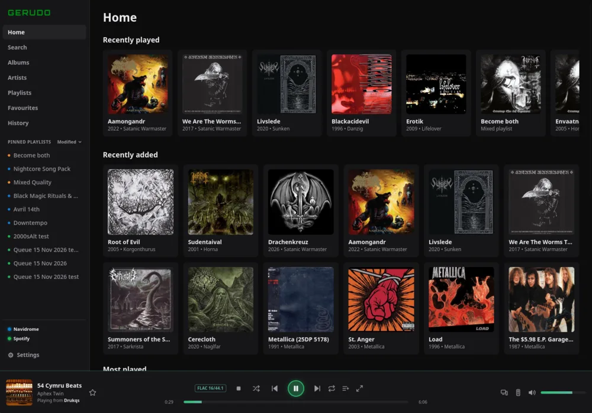
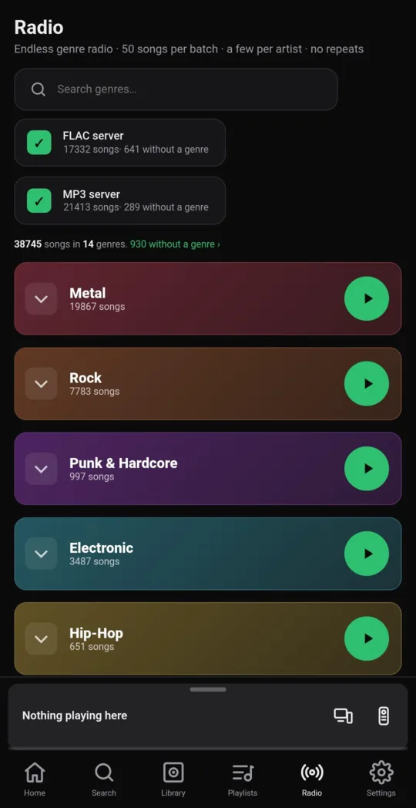
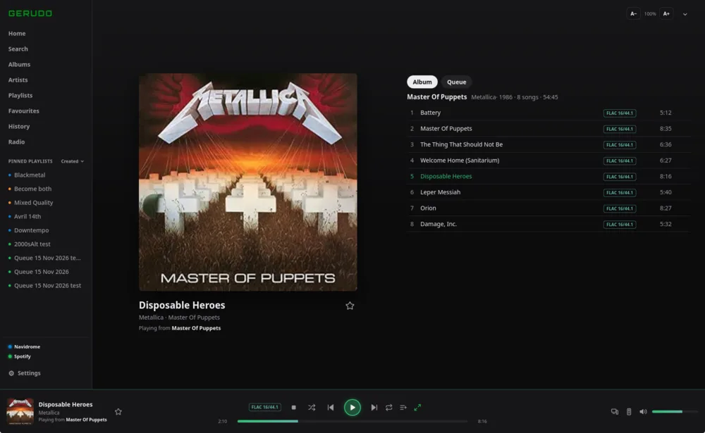
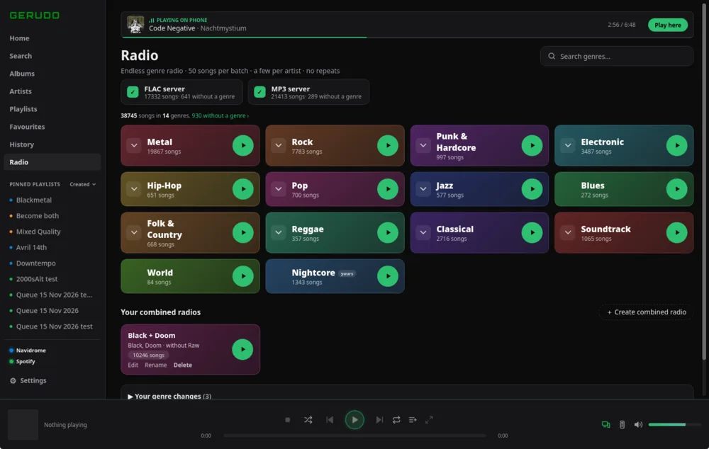
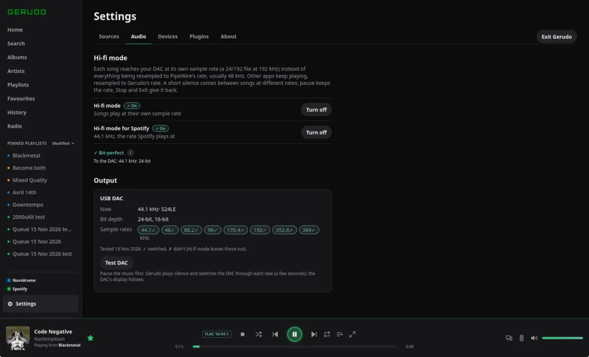
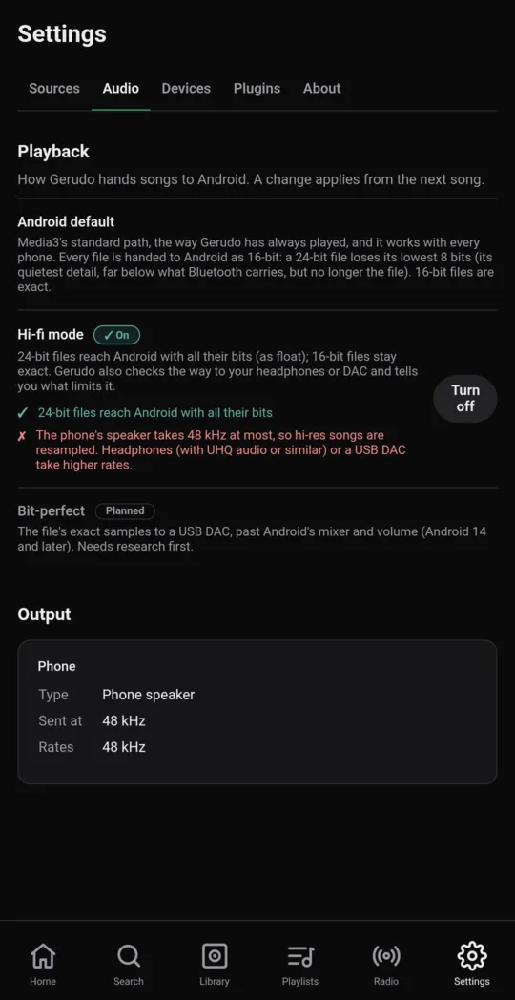
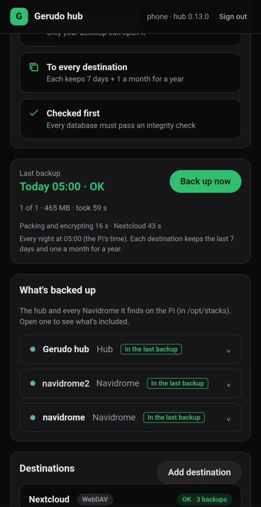

Gerudo förklarat: så följer musiken med dig
Gerudo är en egenhostad musikspelare för en Linux-dator och en Android-telefon. Den spelar din egen musiksamling och Spotify sida vid sida, håller alla enheter i takt och låter dig flytta musiken från en enhet till en annan utan att tappa ett enda slag. Den här manualen förklarar varje funktion, och hur och varför den fungerar som den gör.


Innehåll
- Gerudo i korthet
- Flytta musiken mellan enheter
- Styr en enhet från en annan
- Ett bibliotek på alla enheter
- Länka en ny dator med telefonens kamera
- Säkerhet, alltihop
- Genreradio
- Flera Navidrome-servrar
- Hi-fi-ljud
- Spotify bredvid din egen musik
- Säkerhetskopior och att få tillbaka allt
- Installera och uppdatera
- Vardagsdetaljer
- Kommer senare
- Nyheter
Inget kapitel eller avsnitt heter så. Prova ett annat ord.
Gerudo i korthet
Vad Gerudo består av, och vilken del som gör vad. Allt annat i manualen bygger på den här bilden.
Idén på en minut
De flesta musikspelare bor på en enda enhet. Gerudo bor på alla på en gång, och de arbetar som ett lag:
- Din egen musik, orörd. Filerna ligger kvar på en musikserver hemma (Navidrome). Gerudo spelar originalfilen, förlustfritt förblir förlustfritt, och du ser exakt vad du hör.
- Spotify bredvid. En sökning, en kö och en spellista kan rymma låtar från båda. Spotifys egna officiella appar sköter Spotify-uppspelningen; Gerudo talar om vad de ska spela.
- Enheter som känner till varandra. Spellistor, historik och inställningar stämmer överallt. Varje enhet ser vad de andra spelar, kan styra dem och kan ta över musiken på exakt samma sekund.
- Ditt eget. Varje del körs på din egen hårdvara. Inget spelas i en webbläsare, och lösenord ligger aldrig i en fil.




Tänk dig ett litet företag. Varje kollega (en enhet) har en kopia av de gemensamma pärmarna (dina spellistor, din historik och dina inställningar) och kan arbeta på egen hand. En kontorssamordnare (Gerudo-hubben) håller allas pärmar uppdaterade, kopplar samtal mellan kollegorna och lämnar över en kund från ett skrivbord till nästa utan att kunden märker något. Själva varorna (musiken) kommer direkt från företagets eget lager (Navidrome) eller en extern leverantör (Spotify), aldrig över samordnarens skrivbord.
Kartan
Varje del av Gerudo och vad som färdas mellan dem. Klicka på en del (eller tabba dit och tryck Enter) för att se vad den gör.
Tryck på kartan för att öppna den i helskärm: nyp eller använd + och − för att zooma, dra för att flytta och tryck på en del.
Dator
Gerudo-appen på en Linux-dator. Den spelar din egen musik genom libmpv in i systemets gemensamma ljudserver (PipeWire), så att andra appar kan spela samtidigt, och den kan ställa om din DAC till varje låts egen samplingsfrekvens (Hi-fi-ljud). Spotify-låtar spelas av Soloist, Spotifys officiella spelare utan skärm, som Gerudo styr.
- musik från Navidrome
- synk och styrning via hubben
- Spotify via Soloist
- mediatangenter och skrivbordets mediawidget
Telefon
Samma app på Android. Uppspelningen körs i en separat bakgrundstjänst (Androids Media3), så musiken fortsätter med skärmen släckt eller appen stängd, och låsskärmen och Bluetooth-knapparna fungerar. Spotify-låtar spelas av den officiella Spotify-appen. Kameran länkar nya datorer (kapitel 4).
- musik från Navidrome
- synk och styrning via hubben
- Spotify via Spotify-appen
- hemifrån: via Tailscale
En dator till
Varje ytterligare Linux-dator kör samma datorapp. Du sätter upp den genom att skanna en kod på dess skärm med telefonen: den får dina musikservrar och deras lösenord, förseglade så att bara den kan öppna dem, och en egen nyckel till hubben (kapitel 4). Därefter är den en fullvärdig medlem: den spelar från Navidrome, synkar och kan ta över eller styra musiken.
- synk och styrning via hubben
- musik från Navidrome (som datorn)
Navidrome-servrar
En fri musikserver som du kör själv; den rymmer dina musikfiler. Gerudo talar dess OpenSubsonic-gränssnitt och spelar varje låts originalfil, utan omkodning. Du kan använda flera samtidigt, till exempel en med förlustfria filer och en med MP3:or (kapitel 7). Varje enhet strömmar direkt från Navidrome: musiken passerar aldrig genom hubben.
- strömmar till alla enheter
- dess data finns i hubbens nattliga säkerhetskopia
Gerudo-hubben
En liten tjänst skriven i Rust som körs i Docker på en Raspberry Pi hemma. Den är företagets kontorssamordnare:
- Håller enheterna i takt: sparar det som delas (spellistor, historik, radiokanaler, genreändringar med mera) och berättar för alla enheter när något har ändrats (kapitel 3).
- För vidare meddelanden: vad varje enhet spelar, fjärrstyrning och överlämningar av musiken (kapitel 1 och 2).
- Har Spotify-inloggningen och ger enheterna kortlivade åtkomsttoken.
- Frågar Last.fm om genretaggar en gång, för alla enheter (kapitel 6).
- Säkerhetskopierar allt varje natt, krypterat (kapitel 10), och delar ut installationsfiler och uppdateringar (kapitel 11).
Varje enhet har sin egen kopia och fungerar utan den; om hubben ligger nere väntar ändringarna och skickas när den är tillbaka.
Tailscale
Ett privat nätverk mellan dina egna enheter, byggt på WireGuard-kryptering. Hemma når telefonen hubben och Navidrome direkt; hemifrån går den via Tailscale, som om den fortfarande vore på hemnätverket, utan att något öppnas mot internet (kapitel 5). Varje server kan ha en hemadress och en bortaadress, och Gerudo väljer den som svarar.
- telefonen, hemifrån
- når hubben och Navidrome
Spotify
Den andra musikkällan. Gerudo söker och bläddrar i Spotify med dess webb-API, och Spotifys egna officiella appar sköter uppspelningen: Soloist på datorn, Spotify-appen på telefonen. Spotify strömmar aldrig genom Gerudo självt, och inget spelas i en webbläsare (kapitel 9).
- inloggningen sparas i hubben
- sökning och bläddring från varje enhet
- uppspelning i Spotifys appar
Last.fm
En musiktjänst där lyssnarna taggar artister och album med genrer. När dina filer inte säger vilken genre något är använder Genreradion de här taggarna. Bara hubben frågar Last.fm, och den minns svaren, så att dina enheter inte behöver fråga var för sig (kapitel 6).
- genretaggar, via hubben
Platser för säkerhetskopior
Varje natt packar hubben sig själv och varje Navidrome på Pi:n i ett arkiv, krypterar det med din egen nyckel och sparar det i en mapp (till exempel på en NAS) och/eller i Nextcloud. Den behåller de senaste 7 dagarna och en per månad i ett år (kapitel 10).
- från hubben, varje natt
- krypterad innan den lämnar Pi:n
Hårdvaran, och vad som körs på den
Samma system sett som lådor du kan ta på: varje enhet, och programmen som bor i den. Klicka på en del för att se vad den gör och var dess data sparas.
Samma som datorn; länkad från telefonen.
Gerudo på datorn
Gerudo-spelaren och ljudmotorn som den spelar din egen musik genom. Öppna för att se båda.
Spotify på datorn
Spotify-låtar spelas av Soloist, Spotifys officiella spelare utan skärm, som Gerudo styr.
Hemligheter på datorn
Lösenord och nycklar bor i systemets nyckelring, aldrig i en fil.
Hårdvara på datorn
Det som är inkopplat och spelar roll för Gerudo: en USB-DAC, om du använder en.
Gerudo på telefonen
Gerudo-spelaren som du ser, och uppspelningstjänsten bakom den som håller musiken igång. Öppna för att se båda.
Spotify på telefonen
Spotify-låtar spelas av den officiella Spotify-appen, som Gerudo styr.
Hemligheter på telefonen
Lösenord och hubbnyckeln krypteras med en nyckel i telefonens säkra hårdvara.
Hårdvara på telefonen
Kameran, som används för att länka en ny dator genom att skanna dess kod.
Gerudo på en dator till
Samma datorapp; öppna för mer.
Gerudo-spelaren på datorn
Appen du använder (Tauri med ett Svelte-gränssnitt och en kärna i Rust). Den bläddrar och söker i dina servrar och i Spotify, har en egen kopia av allt som delas via hubben och spelar din egen musik själv.
Data: en egen kopia av det som synkas, cachar (omslag, låtlistor), inställningar som bara gäller enheten.
Ljudmotorn
libmpv spelar varje låts originalfil in i PipeWire, datorns gemensamma ljudsystem, så att andra appar kan spela samtidigt. Med Hi-fi-läget byter PipeWire till varje låts egen samplingsfrekvens (kapitel 8).
Soloist
Spotifys officiella spelare utan skärm. Gerudo styr den över en lokal anslutning när en Spotifylåt står på tur; Spotify strömmar aldrig genom Gerudo självt (kapitel 9).
Dess nyckel bor i datorns nyckelring och lämnar aldrig datorn.
Systemets nyckelring
KWallet eller GNOME Keyring: där datorn förvarar dina Navidrome-lösenord, sin hubbnyckel och Soloistnyckeln, skyddade av din inloggning. Inget lösenord ligger någonsin i en fil (kapitel 5).
USB-DAC
Valfri: en digital-till-analog-omvandlare till dina hörlurar eller högtalare. Gerudo kan ställa om den till varje låts egen samplingsfrekvens och visar när en låt når den bitperfekt (kapitel 8).
Gerudo-spelaren på telefonen
Samma app på Android, med en layout för pekskärm. Skärmen du ser speglar bara uppspelningstjänsten, som sköter själva spelandet.
Data: en egen kopia av det som synkas, cachar, inställningar som bara gäller enheten.
Uppspelningstjänsten
En separat bakgrundstjänst (Androids Media3) som äger kön: musiken fortsätter med skärmen släckt eller appen stängd, och låsskärmen och Bluetooth-knapparna fungerar. Den lyssnar också efter hubben, så att en låst telefon kan styras och ta emot musiken (kapitel 1 och 2).
Spotify-appen
Spotifys egen app spelar Spotify-låtar på telefonen; Gerudo talar om vad den ska spela via Spotifys App Remote.
Android Keystore
En nyckel i telefonens säkra hårdvara krypterar Navidrome-lösenorden (AES-256-GCM) och hubbnyckeln. Nyckeln kan inte kopieras ut ur telefonen.
Kameran
Skannar QR-koden på en ny dators skärm för att länka den (kapitel 4).
En dator till
Varje ytterligare Linux-dator kör samma datorapp. När du länkar den från telefonen får den dina servrar och en egen hubbnyckel; installation och uppdateringar kommer från hubben (kapitel 11).
Ditt nätverk
Hemma når alla enheter Pi:n över hemnätverket. Hemifrån knyter Tailscale (byggt på WireGuard-kryptering) ihop dina enheter till ett privat nätverk, som om de fortfarande vore hemma. Inget på Pi:n öppnas mot internet.
Docker
Docker kör varje serverprogram i sin egen container: en förseglad låda med precis det programmet behöver. Varje container ser bara de mappar den får (hubben får till exempel läsa Navidromes data för att säkerhetskopiera den), var och en kan uppdateras eller startas om för sig, och samma upplägg fungerar på vilken Linux-maskin som helst med Docker, inte bara en Raspberry Pi. Öppna en container för att se dess delar.
Containern Gerudo-hubben
Gerudos egen server: ett litet program i Rust som håller dina enheter i takt, för meddelanden mellan dem, har Spotify-inloggningen, frågar Last.fm, gör de nattliga säkerhetskopiorna och delar ut installationsfilerna. Öppna för att se varje del.
Data: en enda databasfil, säkerhetskopierad varje natt.
Navidrome 1
Din huvudsakliga musikserver, här den med förlustfria filer. Den indexerar musikmappen den får och strömmar originalfilerna till alla enheter.
Data: dess databas och omslag, säkerhetskopierade varje natt; själva musikfilerna inte.
Navidrome 2
Valfri: en andra musikserver, till exempel med MP3:or av musik du inte har förlustfritt. Gerudo använder båda samtidigt och visar ett album du har på båda en gång, med en flik per version (kapitel 7).
Ut från Pi:n
- Ned till NAS:en och Nextcloud: den nattliga säkerhetskopian, redan krypterad innan den lämnar Pi:n. Inget kommer tillbaka om du inte återställer.
- Åt båda hållen med internet: hubben förnyar Spotify-inloggningen och frågar Last.fm om genretaggar. Dina enheter pratar också direkt med Spotify, för att söka och spela.
- Aldrig uppkopplad: backupnyckelns privata halva stannar hos dig.
Hubben: synk och direktförmedling
Ett litet program i Rust, en Docker-container. Det håller alla enheter i takt och för meddelanden mellan dem: vad var och en spelar, fjärrstyrning och överlämningar av musiken (kapitel 3, 1 och 2). Varje anrop kräver en enhetsnyckel.
Hubbens databas
En enda SQLite-fil med allt som delas: blandade spellistor, historik, radiokanaler, genreändringar, fästa listor, undantag, enhetsnycklarna (som hashvärden) och inställningarna för säkerhetskopior.
Säkerhetskopieras varje natt.
Spotify-inloggning
Bara hubben sparar Spotifys långlivade inloggningstoken; enheterna får kortlivade åtkomsttoken från den.
Last.fm-taggar
Hubben frågar Last.fm om varje artists och albums genretaggar en gång, sparar dem och förnyar dem efter 30 dagar, för alla enheter (kapitel 6).
Den nattliga säkerhetskopieringen
Klockan 05:00 packar den hubben och varje Navidrome på Pi:n i ett arkiv, krypterar det med din backupnyckel och skickar det till varje mål (kapitel 10).
Webbsidan för säkerhetskopior
Hubbens egen sida för säkerhetskopior: den senaste kopian, Back up now, mål, nyckeln, historiken och återställningsstegen. Öppnas från Gerudo med en engångslänk (kapitel 10).
Installation och uppdateringar
Hubben delar ut ett signerat paketförråd för Arch, Debian/Ubuntu och Fedora, ett installationsskript på en rad och telefonens app (kapitel 11). De, och en hälsokontroll, är det enda som svarar utan enhetsnyckel.
Navidrome
En fri musikserver, en Docker-container per server. Den indexerar dina musikfiler och strömmar dem, original och orörda, direkt till varje enhet. Du kan köra en eller flera (kapitel 7).
Navidromes egen data
Varje Navidromes databas (stjärnor, antal spelningar, dess spellistor), inställningar, omslag och plugins.
Säkerhetskopieras varje natt tillsammans med hubben.
Dina musikfiler
Själva FLAC- och MP3-filerna, som Navidrome läser. Gerudo ändrar dem aldrig.
Inte med i Gerudos säkerhetskopia: de är stora och hör hemma i din vanliga filbackup.
NAS: mappen för säkerhetskopior
En nätverksdisk på en NAS, mountad på Pi:n som en mapp. Den nattliga säkerhetskopian sparas där, redan krypterad; 7 dagar och en per månad i ett år behålls.
Nextcloud
Ett valfritt andra mål, som nås över WebDAV. Kopiorna kommer fram krypterade, så molnet kan inte läsa dem.
Spotify
Strömningstjänsten: enheterna söker och bläddrar direkt i den; dess egna appar sköter uppspelningen.
Last.fm
En öppen katalog över lyssnarnas genretaggar. Bara hubben pratar med den.
Backupnyckelns privata halva
Det enda som kan öppna en säkerhetskopia, förvarad hos dig (till exempel i din lösenordshanterare), aldrig på Pi:n. Hubben har bara den publika halvan, så den kan låsa säkerhetskopior men inte öppna dem.
Varför en hubb överhuvudtaget, och inte enheter som pratar direkt?
Telefoner sover, byter nätverk och sitter bakom routrar som inte tar emot inkommande anslutningar. I stället för att varje enhet försöker nå de andra håller varje enhet en anslutning öppen mot hubben, som alltid är igång. Hubben kan då föra vidare ett kommando eller en överlämning direkt, även till en låst telefon, och ha en kopia av allt som delas, så att en enhet som var avstängd helt enkelt kommer ikapp. Det betyder också att ingen tredje part (som Googles push-tjänst) är inblandad.
Vad händer när något ligger nere?
- Hubben ligger nere: musiken fortsätter spela, varje enhet arbetar med sin egen kopia, och ändringarna väntar i en utkorg tills hubben är tillbaka.
- Nätverket försvinner: musik som redan laddats ned fortsätter spela; om den tar slut väntar Gerudo och fortsätter från samma ställe när nätverket är tillbaka.
- Navidrome ligger nere: dess låtar kan inte strömmas, men Spotify-låtar och allt annat fortsätter fungera.
Flytta musiken mellan enheter
Ta med kön, låten och exakt sekund från datorn till telefonen och tillbaka, även till en telefon som ligger låst i fickan.
Som när en kollega lämnar över en kund till nästa skrivbord: den första kollegan lämnar över hela ärendet (vad som beställts, hur långt de kommit, vad som kommer sedan), kliver åt sidan, och nästa fortsätter mitt i meningen. När Gerudo flyttar musiken följer kön, låten, positionen på sekunden och inställningarna med, och sedan tystnar den gamla enheten.
Prova
- Nästa: Low Tide
- Fog Signal
- Night Ferry
- Blanda av · Upprepa alla
- Du trycker på Play here på telefonen; den ber hubben om musiken från datorn.
- Hubben skickar vidare frågan direkt, över anslutningen som datorn håller öppen.
- Datorn svarar med sin kö i spelordning, låten, positionen, blandning, upprepning och var musiken startades från.
- Datorn stoppar och tömmer sin kö: musiken har flyttat, inget ligger kvar pausat där.
- Telefonen startar låten på den sekunden; resten av kön följer med.
Så använder du det
- Från enheten du vill ha musiken på: den andra enhetens rad Playing on … visar vad den spelar; tryck på Play here. Enhetsväljaren i spelarfältet (och telefonens helskärmsspelare) har samma knapp.
- Från enheten som spelar: välj den andra enheten och sedan Play on phone (eller datorns namn).
- Det här följer med: hela kön i spelordning, låten och dess position, blandning och upprepning, och länken ”Playing from” tillbaka till albumet, spellistan eller radiokanalen. En Genreradio som är igång flyttar också med och fortsätter skapa sina omgångar på den nya enheten.
Låten ska fortsätta inom ungefär två sekunder, på samma ställe som den var.

En låst telefon, Spotify-låtar och en enhet som inte svarar
- En låst telefon tar också emot musiken. Telefonens uppspelningstjänst lyssnar själv efter hubben medan den spelar, i 10 minuter efter att den har stoppat och i 10 minuter efter att Gerudo öppnades, så skärmen kan vara släckt. Med Settings → Devices → Always reachable lyssnar den dygnet runt.
- Spotify-låtar flyttar också, på ungefär fem sekunder. Spotify tillåter en ström per konto, så den nya enheten tar först över strömmen och hoppar sedan till rätt sekund.
- Den andra enheten är avstängd eller utom räckhåll: Play here fungerar ändå. Den startar från det senaste den enheten rapporterade (låten, positionen framflyttad med tiden som gått, låtarna efter) och säger att den gjorde så.
- En spelare i taget: när du startar musik på en enhet pausas alla andra som spelar, även om du startade från en låsskärm eller en Bluetooth-knapp. Om två spelade medan de inte nådde varandra fortsätter den som startade sist när de får kontakt igen.
Under huven: varför det går snabbt och varför inget försvinner
Enheten som lämnar ifrån sig musiken svarar med vad den spelar i just det ögonblicket, inte med vad den senast rapporterade, så positionen blir exakt (högst några hundra millisekunder fel, beroende på spelaren). Den stoppar först när svaret är på väg. I handtester flyttade en låt från datorn till en låst telefon med under två sekunders tystnad.
Hubben sparar inget spelartillstånd: den skickar vidare frågan och svaret och glömmer dem. Båda finns bara i minnet.
Styr en enhet från en annan
Använd telefonen som fjärrkontroll till datorn, eller datorn till telefonen: spela, pausa, hoppa, spola, volym och hela kön.
Som ett internsamtal via kontorets växel. Du behöver inte kollegans direktnummer eller gå dit: du ringer växeln (hubben), den kopplar dig till rätt skrivbord, kollegan gör det och berättar hur det gick, allt på en bråkdel av en sekund.
Prova: ett tryck från början till slut
- Telefonen skickar kommandot till hubben. telefon → hubb
- Hubben kopplar det direkt vidare till datorn. hubb → dator
- Datorn gör det, och svarar först därefter med vad den spelar nu. på datorn
- Telefonen visar datorns nya läge. ≈ 40 ms totalt
Så använder du det
- Anslut till en enhet: enhetsväljaren i spelarfältet (på telefonen i helskärmsspelaren). En grön rad Controlling Desktop visar att du styr den andra enheten, med en väg tillbaka.
- Det här kan du göra där: spela, pausa, nästa, föregående, spola, volym (telefonens mediavolym), blanda och upprepa; och hela dess kö: ändra ordning, ta bort, spela en låt ur den, lägga till eller spela något härnäst. Det du väljer att spela medan du styr spelas där.
- Se vad den andra spelar utan att styra den: raden Playing on … visar dess låt, position och vad som kommer härnäst.
Den andra enhetens spelare ska reagera på ett ögonblick: i uppmätta tester ungefär 40 ms från telefonen till datorn och ungefär 100 ms till en låst telefon.

När går en enhet att nå?
- Datorn: så länge Gerudo är igång; den har en öppen anslutning till hubben.
- Telefonen: medan den spelar, i 10 minuter efter att den har stoppat och i 10 minuter efter att Gerudo öppnades. Med Settings → Devices → Always reachable lyssnar den hela tiden, till priset av lite batteri.
- Utom räckhåll: du får veta det direkt, inte efter lång väntan; en enhet som inte svarar inom fem sekunder räknas som att den inte svarar.
Under huven: en öppen linje och en ”long poll”
Datorn håller en WebSocket-anslutning öppen mot hubben och får kommandon direkt den vägen. En sovande telefon kan inte hålla en anslutning vid liv utan att det kostar batteri, så dess uppspelningstjänst använder en long poll: den frågar hubben ”finns det något till mig?”, och hubben håller frågan öppen i upp till 25 sekunder och svarar i samma stund som ett kommando kommer; sedan frågar telefonen igen. Så går en låst telefon att nå inom en tiondels sekund, utan Googles push-tjänst eller någon annan utomstående part.
Vad varje enhet spelar (dess ”närvaro”) rapporteras till hubben och skickas vidare till de andra; hubben har det bara i minnet, och enheterna rapporterar igen inom 30 sekunder efter att hubben startats om.
Det finns bara spelarkommandon. En annan enhet kan inte läsa dina filer, ändra dina inställningar eller göra något annat än att styra musiken, och bara dina egna enheter, var och en med sin egen nyckel, kan skicka dem (kapitel 5).
Ett bibliotek på alla enheter
Spellistor, historik, radiokanaler och dina val stämmer överallt, och inget går förlorat även efter en dag utan uppkoppling.
Varje kollega har en egen kopia av de gemensamma pärmarna och skriver in ändringar direkt. Varje ändring hamnar också i en utkorg till kontorssamordnaren, som numrerar den, arkiverar den och skickar en kopia till alla andra. Om en kollega är borta från kontoret fylls utkorgen helt enkelt på och levereras, i ordning, när hen är tillbaka.
Prova: nedkopplad och tillbaka
- Inga ändringar ännu
- Inget väntar
- Inget nytt
Hubben numrerar varje ändring i den ordning den kommer in. En enhet som varit borta ber om ”allt efter nummer 41” och kommer ikapp på en gång.
Det här hålls i takt
| Vad | Sparas |
|---|---|
| Blandade spellistor (låtar från valfri server och Spotify) | Alla, upp till 10 000 låtar var, sparade av hubben |
| Navidrome- och Spotify-spellistor | Finns i Navidrome eller Spotify; hubben berättar för de andra enheterna när en har ändrats, så att de hämtar den på nytt |
| Historik: varje låt du har lyssnat på | De senaste 500, från alla enheter |
| Nyligen spelade album, spellistor och radiokanaler | De senaste 200 spelningarna; de senaste 10 radiokanalerna |
| Fästa spellistor, ignorerade låtar | Alla |
| Senaste sökningar | De senaste 8 sökningarna och 20 öppnade träffar |
| Genreradio: dina egna genrer, omdöpta eller dolda genrer, rättningar av album och artister, kombinerade radiokanaler, det du har uteslutit | Alla |
| Random picks: uteslutna album och artister | Alla |
Stjärnor, antal spelningar och Navidrome-spellistor sparas i Navidrome självt, och Spotifys i Spotify, så att alla enheter ser dem där.
Utan nätverk, och en gammal hubb
- Ändringar väntar aldrig på nätverket för att ske. Din enhet visar dem direkt. Stjärnor och ändringar i Navidrome- eller Spotify-spellistor som du gör utan nätverk sparas i en utkorg och skickas när nätverket är tillbaka; en liten klocka markerar det som väntar.
- ”N waiting”: en etikett listar allt som fortfarande väntar, och varför (inget nätverk, eller hubben går inte att nå).
- En hubb som är äldre än appen: en ändring av ett slag som hubben inte känner till ännu kastas inte; den väntar tills hubben har uppdaterats, och Gerudo säger till.
Under huven: varför enheternas klockor inte spelar någon roll
Varje delad sak är en post med en nyckel (till exempel en fäst spellista) och ett innehåll. När två enheter ändrar samma post vinner den ändring som når hubben sist: hubben ger varje ändring nästa löpnummer, och enheterna tillämpar ändringarna i den ordningen. Telefonens och datorns klockor kan skilja sig flera minuter utan att det märks.
Borttagningar sparas som markeringar i 90 dagar, så att en enhet som varit borta i flera veckor ändå får veta att något har tagits bort. Om hubben någon gång byts ut märker enheterna det (varje hubb har ett eget id) och börjar om från den nya hubbens kopia.
Länka en ny dator med telefonens kamera
Skanna en kod, så har den nya datorn dina musikservrar, deras lösenord och en egen hubbnyckel, förseglade så att ingen däremellan, inte ens hubben, kan läsa dem.
Den nya datorn delar ut ett öppet hänglås (som visas i QR-koden) och behåller den enda nyckeln till det. Telefonen lägger dina serveruppgifter i en låda, smäller igen datorns hänglås på den och ger lådan till hubben att leverera. Hubben bär på en låst låda som den inte har någon nyckel till; bara datorn kan öppna den.
Länka, steg för steg
Välj ”Link from your phone” på den nya datorn
En ny installation öppnas på Welcome. Den visar en QR-kod och en sexsiffrig kod.
Skanna koden med telefonen
Settings → Devices → Link a computer, och rikta kameran mot QR-koden.
Jämför de sex siffrorna och godkänn
Kontrollera att båda skärmarna visar samma sex siffror, tryck på Link och lås upp telefonen med fingeravtryck eller PIN-kod.
Datorn ska nu ställa in sig själv: dina servrar, Spotify, synk och flytt av musiken fungerar.
Bara Spotifys Soloist-nyckel skriver du in på själva datorn; telefonen har den aldrig.

Det här händer inuti
Ett nyckelpar för engångsbruk
Datorn skapar ett nytt nyckelpar bara för den här länkningen. Den privata halvan stannar i dess minne och skrivs aldrig ned någonstans.
Hubben seringet ännu”Länka mig”
Datorn berättar sitt namn och nyckelns publika halva för hubben. Hubben svarar med ett länk-id och en hämtningstoken; token lämnar aldrig datorn.
Hubben serett namn, en publik nyckel (32 byte, som vem som helst får se), länk-id:tQR-koden och de sex siffrorna
QR-koden innehåller bara länk-id:t och den publika nyckeln: ingen hubbadress, ingen hemlighet. De sex siffrorna räknas fram ur båda, så att telefonen kan visa samma siffror.
Hubben seringet: det här händer på skärmenTelefonen skannar och kontrollerar
Telefonen frågar sin egen hubb vad som väntar under det länk-id:t och kontrollerar att den publika nyckeln där är samma som i QR-koden. Är nyckeln utbytt skickar den ingenting.
Hubben sertelefonens fråga, signerad med telefonens egen enhetsnyckelDu godkänner
De sex siffrorna stämmer, du trycker på Link och låser upp telefonen. Utan det händer ingenting.
Hubben seringetFörsegling
Telefonen förseglar dina servrar och deras lösenord med datorns publika nyckel, bundet till det här länk-id:t.
Hubben seringet ännuGodkänt, med den förseglade lådan
Telefonen skickar sitt godkännande och de förseglade byten. Hubben skapar datorns egen enhetsnyckel.
Hubben ser01 9f3a…c2 7b0e… (förseglade byte som den inte kan öppna)Hämta, öppna, glöm
Datorn hämtar sin enhetsnyckel och den förseglade lådan med sin hämtningstoken. Sedan glömmer hubben båda. Datorn öppnar lådan med sin privata nyckel och lägger allt i systemets nyckelring.
Hubben serhämtningstoken (bara datorn har den), och tar sedan bort länkningen
Krypteringen, och varför den valdes
Lådan förseglas med tre välkända byggstenar, använda tillsammans på samma sätt som moderna säkra meddelandeappar gör:
| Byggsten | Vad den gör här | Varför just den |
|---|---|---|
| X25519 | Telefonen skapar ett eget nyckelpar för engångsbruk; tillsammans med datorns publika nyckel kommer båda sidor fram till samma delade hemlighet utan att någonsin skicka den. | Nycklarna är bara 32 byte, så en ryms i en QR-kod med god marginal; snabb på alla telefoner; väl granskad; inga certifikat eller utfärdare behövs. |
| HKDF-SHA256 | Gör om den delade hemligheten till själva krypteringsnyckeln, saltad med båda de publika nycklarna. | Standardsättet att göra ett nyckelutbyte till en ren nyckel; saltet binder nyckeln till exakt de här två nycklarna. |
| ChaCha20-Poly1305 | Krypterar paketet och lägger till ett sigill som bryts om en enda bit ändras. Länk-id:t binds in som ”associerade data”. | Autentiserad: manipulation upptäcks, den döljs inte bara. Snabb i mjukvara på telefoner utan särskilda kretsar. Eftersom länk-id:t är inbundet kan en låda inte spelas upp igen mot en annan länkning. |
Detaljerna
- De sex siffrorna är de första siffrorna i ett SHA-256-fingeravtryck av datorns publika nyckel och länk-id:t: en snabb mänsklig kontroll av att telefonen länkar datorn framför dig.
- Ett foto av QR-koden räcker inte för att stjäla något: den innehåller ingen hemlighet, enhetsnyckeln lämnas bara ut mot hämtningstoken som aldrig lämnar datorn, och inget händer utan din upplåsta telefon.
- Kortlivat och begränsat: en länkning går ut efter 5 minuter och tas bort när den hämtats eller avvisats; högst 3 länkningar kan vänta samtidigt, och högst 10 kan startas per 10 minuter.
- Vem som får godkänna: bara dina första enheter (skapade på själva hubben) får länka andra; en länkad dator får inte, om du inte tillåter det.
- De förseglade byten är: en versionsbyte, telefonens publika engångsnyckel, en nonce på 12 byte, sedan chiffertexten och dess sigill på 16 byte.
Settings → Devices → Remove (på telefonen, eller på en dator som får länka) spärrar en enhets nyckel direkt. En borttappad telefon tar du bort på hubben; en tjuv skulle dessutom behöva låsa upp den först.
Säkerhet, alltihop
Vilka nycklar som finns, var varje lösenord bor, vad som färdas över nätverket och vad som aldrig lämnar en enhet.
- Hemligheter bor bara i systemets hemlighetslager, aldrig i en fil.
- Varje enhet har en egen nyckel, så att en kan spärras utan att de andra påverkas.
- Bara en hälsokontroll och installationsfilerna svarar utan enhetsnyckel, och hubben nås bara inne i ditt privata nätverk.
- Bara officiella klienter spelar Spotify, och inget spelas i en webbläsare.
Vem har vad
| Hemlighet | Var den bor | Vad som färdas |
|---|---|---|
| Navidrome-lösenord | Datorn: systemets nyckelring (KWallet eller GNOME Keyring). Telefonen: krypterade med AES-256-GCM av en nyckel i Android Keystore, som på de flesta telefoner sitter i säker hårdvara och inte kan kopieras ut. | Aldrig lösenordet: varje anrop bär en engångstoken som räknats fram ur det och ett nytt slumpmässigt salt (Subsonics tokeninloggning). |
| Hubbens enhetsnycklar | Varje enhets eget hemlighetslager. Hubben sparar bara en SHA-256-hash av varje. | Skickas med varje anrop till hubben, inne i det privata nätverket. |
| Spotify-inloggning | Bara hubben sparar den långlivade förnyelsetoken. | Enheterna får kortlivade åtkomsttoken och har dem bara i minnet. |
| Soloist-nyckeln (Spotify på datorn) | Datorns nyckelring. | Aldrig: den synkas, länkas och säkerhetskopieras inte. |
| Backupnyckeln | Hubben har bara den publika halvan; den privata halvan har du, utan uppkoppling. | Säkerhetskopiorna lämnar Pi:n redan krypterade. |
På nätverket
- Hubben nås bara via ditt privata nätverk (hemma, eller via Tailscale när du är borta). Varje anrop kräver en enhetsnyckel; bara hälsokontrollen, paketförrådet, dess installationsskript och telefonens installationsfil är öppna, med avsikt.
- Tailscale knyter ihop dina enheter med WireGuard-kryptering, så att telefonen når hemmet var du än är utan att något öppnas i din router.
- Kommandon mellan enheter går bara via hubben, från dina egna enheter, och det finns bara spelarkommandon (kapitel 2).
- Appens skärmar ser aldrig inloggningsuppgifter. Gränssnittet ber appens kärna om data och får tillbaka vanlig låtinformation; omslag hämtas av kärnan och skickas till skärmen via en privat kanal, så ingen signerad adress når den någonsin.
- Loggar och felmeddelanden rensas från alla token innan de skrivs eller visas; ett test kontrollerar det.
Varför varje val
- Systemets hemlighetslager i stället för en krypterad fil: operativsystemet skyddar det redan med din inloggning (och på telefonen med hårdvara), och Gerudo behöver inte uppfinna en egen nyckelhantering.
- En nyckel per enhet i stället för ett delat lösenord: en borttappad telefon tas bort för sig, och hubben kan skilja enheterna åt (vems ändring, vems kommando).
- Hashvärden på hubben: inte ens den som har en kopia av hubbens databas kan använda nycklarna i den.
- Spotify med PKCE (en inloggningsmetod gjord för appar): ingen klienthemlighet finns någonstans, och den långlivade token stannar på ett ställe.
- Ingen librespot och ingen uppspelning i webbläsaren: bara Spotifys egna klienter spelar Spotify, vilket håller Gerudo inom Spotifys regler och kontot säkert.
- Telefonens appdata kan inte säkerhetskopieras ut ur telefonen med backupverktyg, så det krypterade lösenordet stannar på telefonen.
Navidrome nås ofta över vanlig HTTP. Det går bra hemma och via Tailscale (som krypterar trafiken själv), men peka inte Gerudo mot en server över vanlig HTTP på det öppna internet: använd HTTPS där.
Genreradio
Oändligt med musik ur valfri genre eller undergenre i din egen samling: Metal, eller Metal → Black, eller Metal → Black → Atmospheric, sorterad efter Gerudos eget genreträd, dina filers taggar och Last.fm.
Tänk på företagets arkiv. Varje skiva som kommer in (en låt) har en etikett (sina genretaggar). En arkivarie sorterar in den i rätt låda i ett fast arkivskåp (Gerudos genreträd). Saknas etiketten eller går den inte att läsa slår arkivarien upp skivan i en stor öppen katalog (Last.fm). Och om du själv flyttar en skiva till en annan låda gäller din lapp från och med då. Genreradion plockar helt enkelt slumpmässiga skivor ur lådan du väljer.
Gerudos genreträd
I stället för de tusentals stavningar som taggar kommer i sorterar Gerudo allt i ett eget träd: 13 huvudgenrer och 136 genrer totalt, i upp till tre nivåer (till exempel Metal → Black → Atmospheric). Öppna en genre för att se vad som finns i den:
Metal41
- Black
- Atmospheric
- Depressive
- Raw
- Melodic
- Symphonic
- Avant-garde
- Post-black
- Industrial
- Black 'n' roll
- Death
- Melodic
- Brutal
- Technical
- Progressive
- Old-school
- Blackened
- Deathgrind
- Doom
- Funeral
- Death-doom
- Drone
- Gothic doom
- Heavy
- NWOBHM
- Power
- Speed
- Thrash
- Grindcore
- Goregrind
- Progressive
- Folk / Viking / Pagan
- Gothic
- Symphonic
- Industrial
- Nu / Alternative
- Metalcore
- Groove
- Sludge / Stoner
- Post-metal
- Avant-garde
Rock23
- Classic / Rock & roll
- Hard rock
- Psychedelic
- Space rock
- Stoner rock
- Progressive
- Alternative / Indie
- Grunge
- Britpop
- Shoegaze
- Math rock
- Post-rock
- Noise rock
- Gothic rock
- Darkwave
- Post-punk / New wave
- Folk rock
- Depressive rock
- Instrumental rock
- Blues rock
- J-rock
- Pop rock
- Experimental
Punk & Hardcore7
- Punk rock
- Horror punk
- Hardcore punk
- Post-hardcore
- Screamo / Emo
- Crossover
- Pop punk
Electronic19
- Ambient
- Dark ambient
- Drone
- IDM
- Techno
- Hardcore techno
- Happy hardcore
- House
- Trance
- Psytrance
- Goa
- Dubstep / Bass
- Synthpop
- Industrial
- Trip hop / Downtempo
- Chiptune
- Noise
- Dance / EDM
- Experimental electronic
Hip-Hop4
- Rap
- East coast
- Underground / Alternative
- Zef
Pop4
- Indie pop
- Dream pop
- K-pop
- R&B / Soul / Funk
Jazz4
- Vocal jazz
- Swing
- Acid jazz
- Jazz rock
Blues0
Folk & Country8
- Folk
- Acid folk
- Neofolk
- Nordic folk
- Celtic
- Atmospheric folk
- Singer-songwriter
- Country
Reggae3
- Roots
- Dub
- Ska
Classical7
- Baroque
- Romantic
- Contemporary
- Chamber
- Concerto
- Neoclassical
- Opera
Soundtrack3
- Film score
- Video game
- Trailer music
World0


Stavningar matchas förlåtande: ”Hip-Hop” är ”hip hop”, ”R&B” är ”r and b”, och ihopklistrade taggar som Black Metal|Doom Metal delas upp. Ord som inte är genrer (”favourites”, ”seen live”, ”80s”, nationaliteter) hoppas över.
Så får en låt sin genre
- Dina taggarBlack Metal|Doom Metal delas i två, och båda finns i trädet: Metal → BlackMetal → Doom
- Last.fmBehövs inte: dina taggar säger redan exakt var den hör hemma.
- Dina rättningarInga.
- Dina taggarMetal: bara huvudgenren. Metal
- Last.fmPå Last.fm är artisten taggad atmospheric black metal. Det ligger inom din Metal, så detaljen läggs till: Metal → Black → Atmospheric
- Dina rättningarInga.
- Dina taggarInga.
- Last.fmArtisten är taggad post-rock: Rock → Alternative / Indie → Post-rock
- Dina rättningarInga.
- Dina taggarphonk: en riktig stil, men inte en som trädet har.
- Last.fmAlbumets egna Last.fm-taggar prövas; här placerar inte heller de det.
- Utan genreAlbumet hamnar i listan Without a genre på radiosidan, under Tags Radio doesn't know: phonk. Make a genre… skapar en egen genre och flyttar dit varje album med den taggen: Phonk
- Dina taggarShoegaze: Rock → Alternative / Indie → Shoegaze
- Last.fmBehövs inte.
- Dina rättningarDu valde Radio genre… → Also add to och din egen genre ”Late nights”. Albumet ligger kvar där det var och finns i din också: Rock → Alternative / Indie → ShoegazeLate nights
Spela en radiokanal
- Starta en: Radio i sidofältet (en flik på telefonen), och sedan valfri genre eller undergenre.
- 50 låtar i taget: slumpvis, några per artist, inga som redan spelats i den här radiokanalen (och inga som spelats nyligen, så länge det finns nog med annat). När den senaste omgången börjar läggs 50 till, så det ligger alltid timmar av musik i kön. Du kan stänga av Adding songs i radions fält.
- Vilka servrar: väljs på radiosidan under Servers in Radio.
- På en annan enhet: en radiokanal körs på enheten som spelar den; Play here flyttar den, med samma låt och ögonblick, och den nya enheten fortsätter skapa omgångar.
- History → Radio: de senaste 10 radiokanalerna med varje låt som köats: Continue, Play from start eller Save as playlist.
Du ska höra en låt ur genren direkt, och kön ska aldrig ta slut.
Gör den till din
- Rätta ett album eller en artist: Radio genre… i albumets ⋯-meny eller på artistens sida. Välj vad (det här albumet, eller allt av artisten, även senare album), var (valfri genre, eller en ny) och hur (Move to eller Also add to). En rättning gäller samma album på alla servrar.
- Egna genrer: skapa, byt namn på, flytta eller ta bort dem; byt namn på eller dölj Gerudos egna. Dina genrer får musik bara från dina rättningar, aldrig från taggar.
- Kombinerade radiokanaler: en radiokanal över flera genrer, till exempel Black utan Raw, plus Doom. Kryssa i genrer i trädet (en ikryssad genre tar med allt under sig; kryssa ur en undergenre för att utesluta bara den), så räknar dialogrutan låtarna.
- Uteslut saker: en låt, ett album (bara en version om du vill) eller en artist kan hållas utanför radion. De listas under Left out of Radio, var och en med Undo.
- Utan genre: album som radion inte kan placera än, rättade ett i taget eller flera på en gång.
- Överallt på en gång: allt detta sparas i hubben, så att alla enheter sorterar på samma sätt, och det finns med i den nattliga säkerhetskopian. Inget skrivs till dina filer eller till Navidrome.
Under huven: Last.fm, ny musik och nya taggar
- Last.fm är valfritt. Du anger en gratis Last.fm-nyckel en gång (Settings → Plugins); den skickas till hubben och visas aldrig igen. Hubben slår upp varje artist och album en gång, sparar taggarna och förnyar dem efter 30 dagar. Utan nyckel kommer genrerna bara från dina egna taggar.
- Ny musik sorterar sig själv: när Navidrome har skannat nya filer märker Gerudo det nästa gång radion behöver sina genrer och sorterar om, och frågar Last.fm bara om det som är nytt.
- Sammanhanget räknas: en tagg som ”hardcore” betyder hardcore techno bredvid elektroniska taggar och hardcore punk annars.
- Gerudo skriver aldrig taggar. Vill du ändra en genre överallt (även i andra spelare) taggar du om filerna; vill du ändra den bara i Gerudo använder du en rättning.
Flera Navidrome-servrar
En förlustfri server och en MP3-server som ett bibliotek: ett album du har på båda visas en gång, med en flik per version.
Ett företag med två lager. Katalogen listar varje produkt en gång, och när båda lagren har den visar produktsidan båda: ”finns som deluxeutgåva från huvudlagret, eller som standardutgåva från det andra”. Gerudo gör likadant med album på dina servrar.
Prova
Så använder du flera servrar
- Lägg till en: Settings → Sources → + Add server. Den första servern är huvudservern; senare servrar blir tilläggsservrar, och när du lägger till en byter Gerudo inte över till den.
- Huvudservern: nya spellistor hamnar där som standard, och den listas först. Make main byter roller.
- Var varje server visas: tre reglage per server: Search, Albums (även raderna på Home och Favourites) och Artists. Avslaget betyder bara att den inte listas: dess låtar spelas fortfarande från kön, historiken och spellistor.
- Search har en grupp per server.
- Spellistor hör till en server. Om du lägger till en låt från ett annat ställe erbjuder Gerudo att göra spellistan blandad (sparad i hubben, med låtar varifrån som helst).
Du ska se ett kort per album, och versionsflikar på albumsidan när du har det två gånger.
Under huven: så matchas album, och så är enheterna överens om en server
- Album matchas på artist och namn, utan hänsyn till versaler, skiljetecken och utgåvetillägg som ”(Remastered)”. Album med olika namn visas två gånger och skiljs åt av sina kvalitetsmärken.
- En server känns igen på en nyckel som skapas ur dess adress, inte dess namn, så telefonen och datorn känner igen samma server även om du kallar den olika saker på var och en. Om du ändrar en adress behålls den gamla nyckeln.
- Varje servers egen biblioteksgranskning (Settings → Sources → öppna en server → Library check) tittar bara inom den servern: kopior på dina andra servrar är dina medvetna versioner, inte dubbletter (kapitel 12).
Hi-fi-ljud
Varje låt når din DAC i sin egen samplingsfrekvens, bitperfekt när det går, och Gerudo visar alltid vad du faktiskt hör.
Normalt kör en dators ljudsystem allt i en och samma takt (oftast 48 kHz) och gör om varje låt till den, som en butik som packar om varje vara i samma låda. En fil i 24 bitar/192 kHz pressas ihop till 48 kHz på vägen. Hi-fi-läget säger åt ljudsystemet att byta till varje låts egen frekvens medan Gerudo spelar, så att låten når DAC:en i sin originalförpackning.
Hur bra är den här filen?
Förlustfria filer börjar på 85 (cd-kvalitet, 16 bitar/44,1 kHz) och når 100 vid 24 bitar/192 kHz. MP3 går från 15 vid 64 kbit/s till 75 vid 320 kbit/s; AAC, Opus och Ogg låter som MP3 vid ungefär 1,3 gånger sin bithastighet, så de får lite högre betyg, men filer med förstörande komprimering stannar under 80. Betyget gäller filen som Gerudo får; panelen visar separat vad som når din utgång.
På datorn
Settings → Audio → Hi-fi mode → Turn on. Inget i systemets konfiguration ändras: Gerudo ställer in ljudserverns (PipeWires) frekvens medan den spelar och lämnar tillbaka den efteråt.
- Test DAC: spelar tystnad och går igenom varje frekvens som din DAC uppger; var och en får en ✓ när den verkligen bytte. Hi-fi-läget använder sedan bara dem.
- Indikatorn för bitperfekt: ✓ Bit-perfect visas när låten når DAC:en orörd, annars det som står i vägen: Gerudos volym eller systemmixern under 100 %, en annan app som låter, ett bitdjup som DAC:en inte klarar.
- Spotify: spelas i 44,1 kHz, frekvensen som Soloist levererar; med Premium är det förlustfritt och bedöms som dina egna filer.
Kvalitetspanelens rad för utgången ska stämma med filens frekvens, till exempel 96 kHz in och 96 kHz ut.


Volymreglaget
Reglaget går i raka linjer genom tre punkter: −50 dB vid 1 %, −30 dB vid 21 % och 0 dB vid 100 %. I den nedersta femtedelen är varje steg en decibel, och tio steg (från 1 % till 11 %) låter dubbelt så starkt, så det är lätt att ställa in lågmäld lyssning. Vid 100 % lämnar Gerudo samplen orörda, och det är det som håller Hi-fi-läget bitperfekt: ställ in ljudstyrkan på din DAC eller förstärkare i stället.
På telefonen
Settings → Audio → Playback har tre lägen; en ändring gäller från nästa låt.
- Android default: varje fil lämnas till Android som 16 bitar, så en fil i 24 bitar förlorar sina tystaste detaljer. Fungerar på alla telefoner.
- Hi-fi mode: filer i 24 bitar når Android med alla sina bitar. Gerudo kontrollerar vägen till dina öron: den varnar när Bluetooth-hörlurar kör i 48 kHz fast de klarar mer (Samsungs alternativ UHQ audio tillåter till exempel upp till 96 kHz), och att telefonens högtalare klarar högst 48 kHz.
- Bit-perfect till en USB-DAC: planerat, se Kommer senare.
Kortet Output och kvalitetspanelen visar vart ljudet går (högtalare, Bluetooth-hörlurar med namn, USB, sladd), i vilken frekvens, och om Android samplar om det.

- Bluetooth är aldrig bitperfekt: ljudet görs alltid om för den trådlösa länken.
- En kort tystnad (ungefär 0,3–0,5 s) mellan låtar i olika frekvenser på datorn, medan DAC:en byter; låtar i samma frekvens spelas utan avbrott.
- Andra appar fortsätter spela på datorn, omgjorda till låtens frekvens.
- Indikatorn läser inställningar, den mäter inte vad DAC:en tar emot.
Spotify bredvid din egen musik
En sökning, en kö och en spellista för din egen musik och Spotify, med Spotifys egna appar som sköter Spotify-uppspelningen.
En butik som säljer både sina egna varor och en partners. Partnerns produkter visas i samma katalog och hamnar i samma varukorg, men partnern skickar dem själv, på sitt eget sätt. Gerudo bläddrar i Spotify och lägger dess låtar i din kö, och när en står på tur spelar Spotifys officiella spelare den medan Gerudo håller kön, låsskärmen och knapparna igång.
Vem spelar vad
| Din egen musik | Spotify | |
|---|---|---|
| Dator | Gerudos egen spelare (libmpv) | Soloist, Spotifys officiella spelare utan skärm, styrd av Gerudo |
| Telefon | Gerudos uppspelningstjänst (Media3) | Spotify-appen, styrd via Spotifys App Remote |
| Sökning, album, spellistor | Navidrome | Spotifys webb-API |
Det här kan du göra
- En sökning: träffarna grupperas per källa; Spotify söks när du trycker Enter (ditt eget bibliotek svarar medan du skriver).
- Bläddra i Spotify: album, artister, spellistor och dina gillade låtar.
- Blanda dem: en kö kan rymma låtar från båda; det kan också en blandad spellista i hubben, samma på alla enheter.
- Spotify-spellistor: skapa, lägg till i, ta bort ur, byt namn på och ta bort dem precis som Navidrome-spellistor.
- Kvalitet: med Premium strömmar Spotify förlustfritt (FLAC), och kvalitetspanelen visar vad som strömmas.
Varför Spotifys egna appar, och inte en inbyggd spelare?
Inofficiella spelare (som librespot) och webbspelare bryter mot Spotifys regler och kan sätta ett konto på spel. Gerudo spelar aldrig Spotify med något annat än Spotifys egna klienter, och aldrig i en webbläsare. Därför är en Spotify-låt i Gerudos kö en ställföreträdare: när den står på tur lämnar Gerudo över den till Soloist eller Spotify-appen och följer med, så att kön, låsskärmen och Bluetooth fortsätter fungera för båda källorna.
Spotify tillåter en ström per konto: när du flyttar musiken till en annan enhet tar den nya enheten först över strömmen (kapitel 1). Inloggningen sparas i hubben, som ger enheterna kortlivade token (kapitel 5).
Säkerhetskopior och att få tillbaka allt
Varje natt packas hubben och dina musikservrar i en krypterad fil och sparas där du vill; om Pi:n går sönder kan du lägga tillbaka allt.
Företagets nattskift kopierar varje viktig pärm, lägger kopiorna i ett kassaskåp som bara ägaren kan öppna och skickar kassaskåpet till två förvaringsplatser. Nattskiftet kan låsa kassaskåpet men har ingen nyckel för att öppna det: den har bara ägaren, och den förvaras någon helt annanstans.
Det här finns i en säkerhetskopia
- Hubben: blandade spellistor, fästa listor, historik och radiokanaler, genreändringar, enhetsnycklarna, inloggningarna till Spotify och Last.fm, själva inställningarna för säkerhetskopior och hubbens egen källkod.
- Varje Navidrome på Pi:n: dess databas (från Navidromes egen nattliga säkerhetskopia), dess inställningar, omslag och plugins.
- Inte musikfilerna: de är stora och hör hemma i din vanliga filbackup.
- En
RESTORE.txtöverst: vad som finns i kopian och hur du lägger tillbaka den för hand med bara standardverktyg, så att en säkerhetskopia plus din nyckel räcker, även om många år.
Varje databas måste klara en integritetskontroll innan den kommer med, så en skadad databas säkerhetskopieras aldrig som om den vore hel.
När, var och hur många
- Varje natt klockan 05:00 (eller med Back up now), till varje mål du anger: en mapp på Pi:n (till exempel en nätverksdisk på en NAS) och/eller Nextcloud eller en annan WebDAV-server. Varje mål har sitt eget resultat; om ett misslyckas stoppar det inte de andra.
- Sparas: de senaste 7 dagarna, plus en per månad i ett år. Prova nedan.
Krypteringen, och varför den valdes
Varje säkerhetskopia krypteras med GPG för din egen nyckel Gerudo Backups innan den lämnar Pi:n. Hubben har bara den publika halvan: nog för att låsa en säkerhetskopia, aldrig för att öppna en. Den privata halvan förvarar du (till exempel i din lösenordshanterare), aldrig på Pi:n.
Varför GPG och ett nyckelpar
- En stulen Pi eller ett kapat molnkonto avslöjar ingenting: säkerhetskopiorna går inte att läsa utan den privata nyckeln, som inte finns på något av ställena.
- Inget lösenord att skriva in klockan 05:00: kryptering med publik nyckel kräver ingen hemlighet på maskinen som krypterar, så nattskiftet kan köras utan tillsyn.
- Ett verktyg som kommer att finnas kvar: GPG har funnits i årtionden och finns på varje Linux-system, så en säkerhetskopia kan öppnas för hand utan Gerudo, även om allt annat är borta.
Sidan för säkerhetskopior
Hubben har en egen sida för säkerhetskopior: den senaste kopian och Back up now, vad som säkerhetskopieras, målen (lägg till, testa, visa kopior, pausa, ta bort), nyckeln, tiden, historiken och återställningssteg för varje fall. Du öppnar den från Gerudo: Settings → Devices → Backup → Open backup page. Gerudo ber hubben om en länk som fungerar en gång, i en minut; sedan förblir webbläsaren inloggad i 12 timmar.

Få tillbaka allt
- Det enkla sättet: ett återställningsskript på datorn (som har nyckeln) listar säkerhetskopiorna, dekrypterar den du väljer och lägger tillbaka allt, eller bara hubben, eller bara en Navidrome.
- Kontrollera att det fungerar utan att röra något: samma skript med
--checkprovar den senaste kopian. - För hand: följ
RESTORE.txti säkerhetskopian.
Dina spellistor, din historik, dina radiokanaler och enheter ska vara precis som de var natten då kopian togs.
Inställningar som bara gäller en enhet (som dess upplägg för Hi-fi-läget eller ordningen i en lista på den skärmen) stannar på den enheten. Allt som delas via hubben finns i säkerhetskopian.
Installera och uppdatera
Installera Gerudo på en dator till med en enda rad, och uppdatera telefonen från din egen hubb, helt utan appbutik.
En ny dator
Installera från din hubb
Kör det här på en dator som når hubben (hemnätverket eller Tailscale):
curl -fsSL http://hub.example:8899/install | sh
(med din hubbs namn i stället för hub.example). Skriptet visar signeringsnyckelns fingeravtryck så att du kan jämföra det, lägger till Gerudos paketförråd på hubben i din pakethanterare, installerar Gerudo och kontrollerar att nyckelringen, ljudverktygen och Soloist finns. Fungerar på Arch/CachyOS, Debian/Ubuntu och Fedora.
Gerudo ska nu finnas bland dina program.
Länka den från telefonen
Gerudo öppnas på Welcome: välj Link from your phone och skanna koden (kapitel 4). Eller ställ in den för hand.
Ställ in Soloist
Gerudo letar efter Soloist, guidar dig genom installationen och parkopplar sig med den. Nyckeln skriver du in bara på den datorn.
- Uppdateringar kommer med din vanliga systemuppdatering (pacman, apt eller dnf). Varje paket är signerat, och din pakethanterare vägrar ett paket som inte är det.
- Utan hubben kan Gerudo också installeras från versionssidan eller byggas från källkoden.
Telefonen
- Första installationen: öppna
http://hub.example:8899/androidi telefonens webbläsare (med din hubbs namn i stället); sidan erbjuder appen. - Uppdateringar: Settings → About → Update. Gerudo frågar din hubb om det finns en nyare version och installerar den, signerad med samma nyckel som tidigare (Android vägrar allt annat).
Varför från hubben, och inte från en appbutik?
Gerudo är din egen app, inte en offentlig. När hubben delar ut den stannar allt på din egen hårdvara och i ditt eget nätverk, med signaturer som din pakethanterare och Android själva kontrollerar. Bara de här installationsfilerna, paketförrådet och en hälsokontroll svarar utan enhetsnyckel, med avsikt.
Vardagsdetaljer
Alla de mindre sakerna: sökning som förlåter stavfel, historik, den stora spelaren, biblioteksgranskningen och mer.
Hitta musik
- Förslag medan du skriver, som förlåter versaler, accenter och ett par stavfel; Spotify söks när du trycker Enter. ”Did you mean …?” hjälper när en sökning inte hittar något.
- Album och artister A–Ö med ett register längs kanten, eller ordningen Best quality med kvalitetsmärken.
- Filtrera låtarna i ett album eller en spellista: ⋯ → Filter songs.
- Klicka på låten som spelas (eller på en låttitel i en lista): dess album eller spellista öppnas vid den låten.
Lyssna
- Kön: spela härnäst, lägg till, ta bort (svep åt vänster på telefonen), dra för att ändra ordning; blandningen gör en ny ordning för varje varv med Repeat all.
- Den stora spelaren på datorn: klicka på omslaget i spelarfältet för att få ett stort omslag med albumet och kön bredvid, låten som spelas i blickfånget och textstorlek − / +.
- ”Playing from …” länkar tillbaka till albumet, spellistan eller radiokanalen som musiken startades från, även efter att du flyttat den till en annan enhet.
- Ignorera en låt: den hoppas över när ett album eller en spellista spelas.
- Favoriter, antal spelningar och scrobbling till Navidrome.
- Systemkontroller: mediatangenter, skrivbordets mediawidget och en ikon i systemfältet; på telefonen låsskärmen, aviseringen och Bluetooth-knapparna, och uppspelning med skärmen släckt.

Historik och Home
- Historik: varje låt du har lyssnat på, de senaste 500 från alla dina enheter, per dag, räknat efter hur länge du faktiskt lyssnat; plus albumen, spellistorna och radiokanalerna du har spelat.
- Recently played på Home (alla källor; spellistan om du spelade från en) och fästa spellistor i sidofältet.
- Random picks på Home: uteslut ett album eller en artist (⋯ på kortet; håll fingret på det på telefonen). N left out › bredvid raden listar alla, var och en med Undo.


Biblioteksgranskningen
Settings → Sources → öppna en server → Library check: det som ser fel ut i den serverns musik, med hur du rättar varje sak (Gerudo ändrar inte dina filer; det gör en taggredigerare, och sedan Quick Scan).

| Slag | Hittar |
|---|---|
| Saknade taggar | Ingen titel (bara filnamnet), ingen artist, inget album, inget spårnummer, inget år |
| Dubbletter | Samma artist och titel med högst 3 sekunders skillnad i längd, mer än en gång på servern; Live, Remix och liknande versioner räknas inte |
| Delade album | Ett album som Navidrome visar som flera, och vilken tagg som skiljer |
| Spårnummer | Luckor, samma nummer två gånger, skivnummer på bara vissa låtar |
| Blandade album | Låtar på samma album med olika år, albumartister eller format |
| Omslag | Låtar utan omslag; Check cover sizes hittar omslag under 500 × 500 och album utan riktigt omslag |
Utan nätverk, och notiser
- En bruten anslutning: musik som redan laddats ned fortsätter spela; om den tar slut väntar Gerudo och fortsätter från samma ställe när nätverket är tillbaka (i upp till 10 minuter).
- Väntande ändringar markeras med en liten klocka, och ”N waiting” listar dem och varför (kapitel 3).
- Quick Scan (Settings → Sources) ber Navidrome leta efter nya och ändrade filer, och visar hur långt den kommit även om du lämnar sidan.
- Notiser stannar längre när det finns mer att läsa; ett klick, Bakåt eller Esc stänger en.
- Hem- och bortaadresser: varje server kan ha en av varje (till exempel hemnätverket och Tailscale), och Gerudo använder den som svarar.
Kommer senare
Idéer som är planerade men ännu inte schemalagda.
- Låttexter till låten som spelas.
- Lyssningsstatistik ur din historik.
- Bitperfekt på telefonen: en fils exakta sampel till en USB-DAC, förbi Androids mixer och volym. Behöver utredas först.
- En liten spelare utan skärm till en stereo: en enhet du kan lämna över musik till, som spelar din egen musik och körs på en hemmaserver.
- Fler källor och spelare: andra musikservrar och hemmaspelare som ställen att skicka musiken till.
Nyheter
Det nya i varje version, senaste först.
0.18.0
- Biblioteksgranskning per server, med omslagsstorlekar (kapitel 12).
- Random picks: allt du har uteslutit i en lista, var och en med Undo.
- Telefonens kortmeny öppnas bredvid fingret, större; ett tryck utanför eller Bakåt stänger den.
- Den här manualen.
Tidigare versioner
- 0.17.0 (25 nov. 2026): kombinerade radiokanaler; uteslut låtar, album och artister ur radion; sidan Without a genre; väntemarkeringar och ”N waiting”; ändringar väntar på en äldre hubb; Quick Scan behåller sitt läge; notiser som stannar längre.
- 0.16.0 (25 nov. 2026): radions genreredigerare (egna genrer, byt namn på eller dölj Gerudos, rättningar av album och artister); tillförlitlig överlämning av musik till en låst telefon.
- 0.15.0 (24 nov. 2026): kvalitetsmätaren och en flyttbar kvalitetspanel; uteslut album och artister ur Random picks; stjärnor och ändringar i spellistor väntar när du är offline; radions egna serverreglage; uppspelningen fortsätter efter en bruten anslutning; telefonen går att nå efter att Gerudo öppnats, och Always reachable.
- 0.14.0 (23 nov. 2026): telefonuppdateringar från din hubb.
- 0.13.0 (23 nov. 2026): nattliga krypterade säkerhetskopior, sidan för säkerhetskopior och återställning.
- 0.12.0 (23 nov. 2026): Genreradio; sökförslag; filtrering av låtar; hela kön på enheten du styr; textstorlek i den stora spelaren; blandning per varv.
- 0.11.0 (21 nov. 2026): flera Navidrome-servrar samtidigt, med versionsflikar.
- 0.10.0 (20 nov. 2026): den stora spelaren; Quick Scan; den nya volymkurvan.
- 0.9.0 (20 nov. 2026): låthistorik; spellistor i Recently played; ”Playing from”.
- 0.8.0 (19 nov. 2026): länka en dator från telefonen.
- 0.7.0 (19 nov. 2026): installera på en dator till från din hubb.
- 0.6.0 (19 nov. 2026): Hi-fi-läget på telefonen.
- 0.5.0 (18 nov. 2026): Hi-fi-läget på datorn.
- 0.1–0.4 (november 2026): Navidrome-spelaren på båda enheterna, Spotify, en gemensam sökning, blandade spellistor och synk, att flytta musiken och fjärrstyrning.